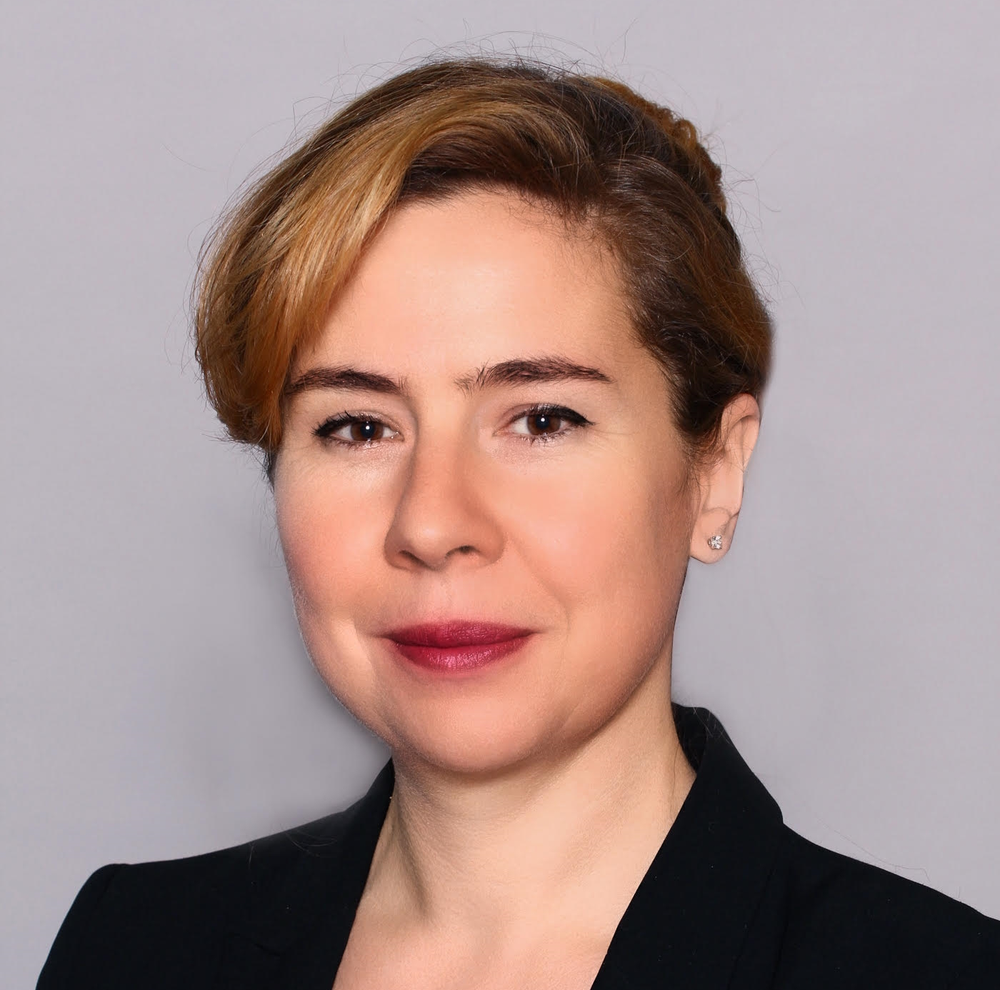
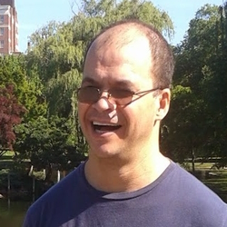
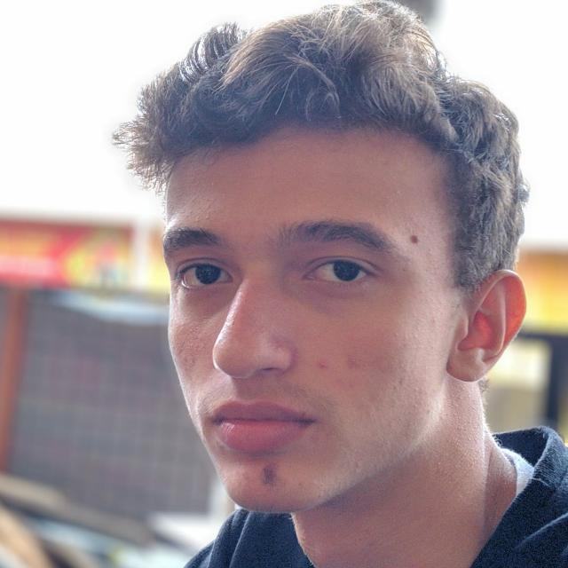
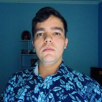
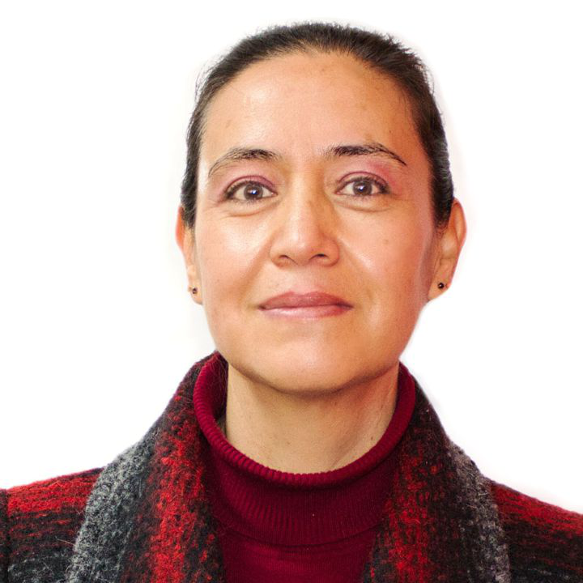
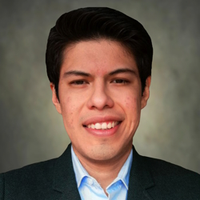
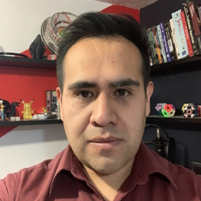
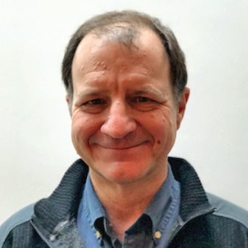

Description
The 41st NA-MIC Project Week was held at MIT (Grier Rooms, Building 34), Cambridge, MA, from June 24 to 28, 2024. The Latin American team participated in the 3D Slicer for Latin America project, showcasing the Tutorial Maker module which was being tested by the broader community.
The team continued development of the Tutorial Maker extension, with contributions covering core infrastructure improvements, localization work, and a NousNav video tutorial project co-led by Sonia Pujol.
Project Team

Sonia Pujol
Harvard Medical School, USA

Luiz Otávio Murta Junior
Universidade de São Paulo, Brazil

Lucas Sanchez Silva
Universidade de São Paulo, Brazil

Douglas Samuel Gonçalves
Universidade de São Paulo, Brazil

Adriana Herlinda Vilchis González
Universidad Autónoma del Estado de México, Mexico

Enrique Hernández Laredo
Universidad Autónoma del Estado de México, Mexico

Victor Manuel Montaño Serrano
Universidad Autónoma del Estado de México, Mexico
Andras Lasso
Queen's University, Canada

Steve Pieper
Isomics Inc., USA